AI正在为千行百业带来变革的机遇，同时AI也在不断拓展自身在各个领域和场景的创新疆界。在企业级软件领域，AI CRM正在成为一种新的产品或应用形态。CRM与AI技术的结合，能够向企业用户交付更加创新和智能的销售管理体验。
作为新一代的开源AI CRM系统，Cordys CRM不仅继承了传统CRM客户全生命周期管理的能力，帮助企业管理从线索到回款（L2C）的各个环节，还能够与AI智能体平台进行无缝集成，通过构建和运营智能体，实现销售运营效率的提升。
目前，通过MCP Server，Cordys CRM可以与MaxKB开源企业级智能体平台进行对接，进而快速构建面向不同场景的销售管理智能体，例如线索智能创建、商机智能跟进、商机智能检索、智能报价等。
本文为您详细介绍在Cordys CRM中集成MaxKB，构建各类销售管理智能体的具体操作方法。
一、在Cordys CRM中创建Access Key和Secret Key
MaxKB与Cordys CRM顺利集成的关键是将MaxKB应用和Cordys CRM的MCP Server进行对接，为此需要先记录Cordys CRM的API Keys信息。本部分将介绍如何获取Cordys CRM的API Keys信息。
首先，进入Cordys CRM，点击左下角用户头像标识，在右侧展开的菜单中选择“个人信息”选项，即可进入“个人中心”页面。
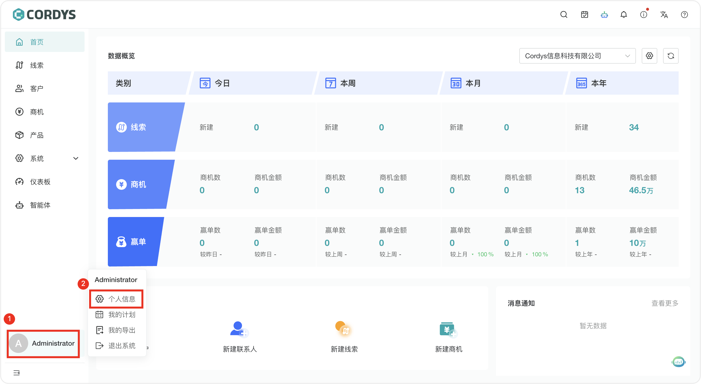
▲图1 进入Cordys CRM“个人中心”页面路径
在“个人中心”页面打开“API Key”选项卡，点击“新增”按钮，即可创建API Keys信息。创建完毕后，记录“Access Key”信息和“Secret Key”信息。
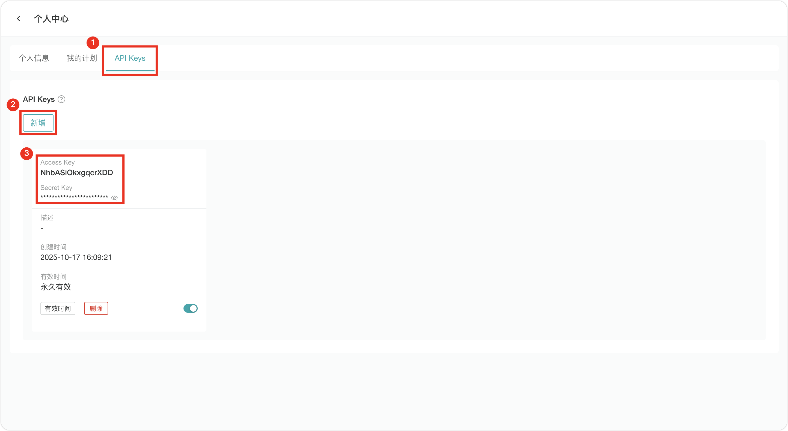
▲图2 新增“API Keys”操作界面二、在MaxKB中创建高级编排应用并配置相关参数
接下来，我们以创建“Cordys CRM小助手”智能体为例，介绍如何在MaxKB中创建应用，并且借助API Keys和MCP Server Config信息将该应用与Cordys CRM的MCP Server进行对接。首先，进入MaxKB首页，点击右上角的“创建”按钮，在下拉菜单中选择“高级编排”选项。
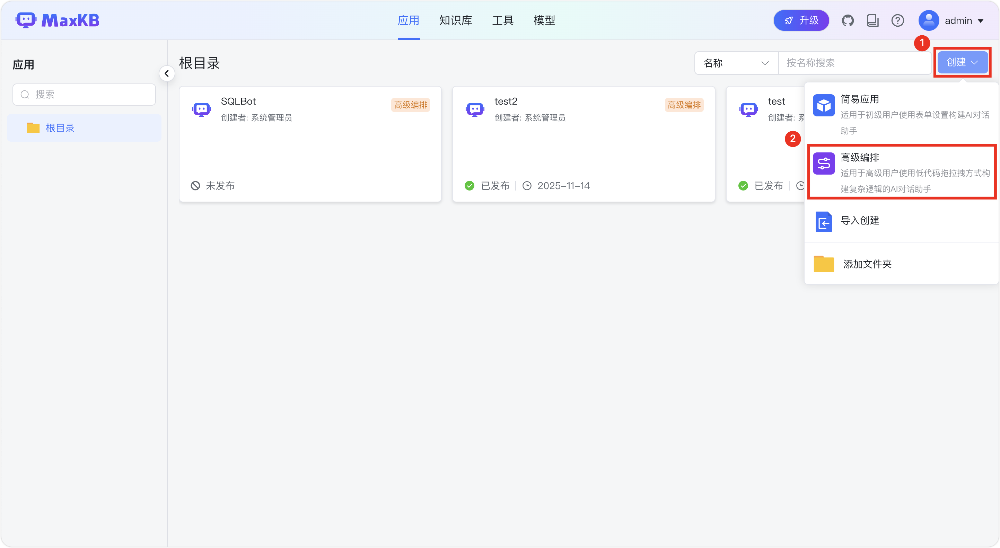
▲图3 在MaxKB中创建高级编排应用
在“创建高级编排应用”对话框中填写“名称”和“描述”信息后，选择“空白创建”模板，点击“创建”按钮，进入高级编排应用的工作流编辑界面，如此一来便完成了空白应用的创建。
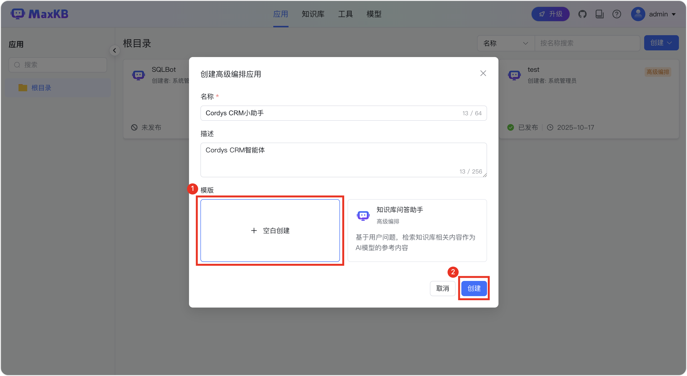
▲图4 使用“空白模板”创建高级编排应用在MaxKB的工作流编辑界面填写“应用描述”和“开场白”信息后，就可以开始对接“Cordys CRM小助手”应用与Cordys CRM了。由于Cordys CRM已经内置了MCP Server，因此只需要在MaxKB应用的工作流节点中填写Cordys CRM的API Keys和MCP Server Config信息，即可完成对接。具体的配置方法是，点击“接口传参”选项后的“添加”按钮，分别添加Cordys CRM的Access Key、Secret Key参数。
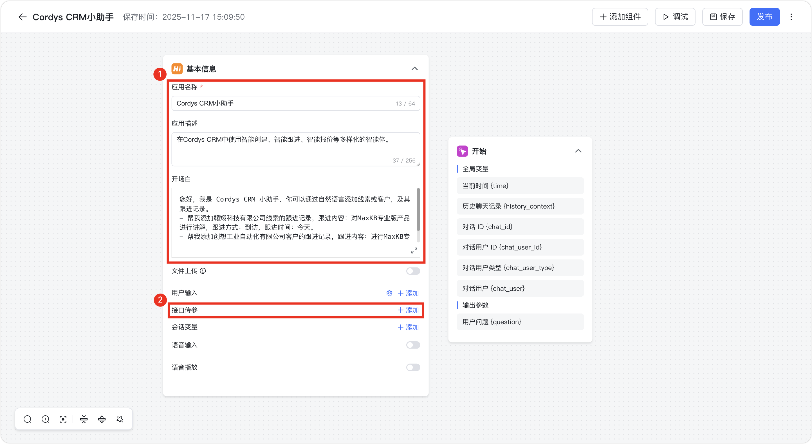
▲图5 “接口传参”配置界面以Access Key参数为例，在“参数”栏为参数命名后，将刚才在Cordys CRM中记录的Access Key信息填写至“默认值”一栏中，点击“添加”按钮，即可完成Access Key的接口传参设置。除了Access Key参数以外，还需要添加Secret Key参数，添加步骤与Access Key参数相同，只需将“默认值”替换为Cordys CRM中对应的Secret Key信息即可。
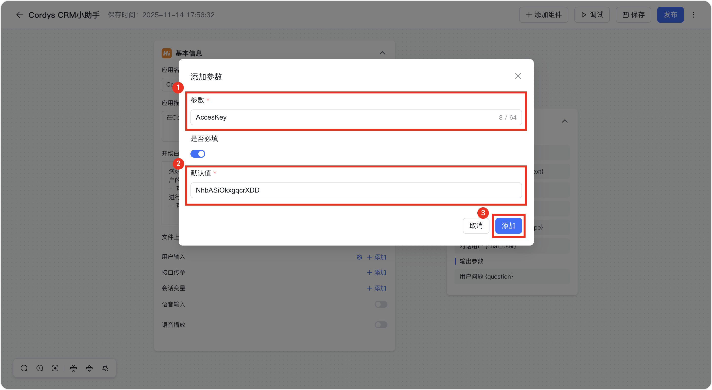
▲图6 填写参数信息操作完成后，可以看到“接口传参”栏目下已经出现了新添加的Access Key参数和Secret Key参数。然后我们将鼠标移动至“开始”节点，可以看到右侧出现“+”按钮，点击该按钮打开“基础组件”选项卡，选择“AI对话”选项，即可在工作流中添加一个“AI对话”节点。
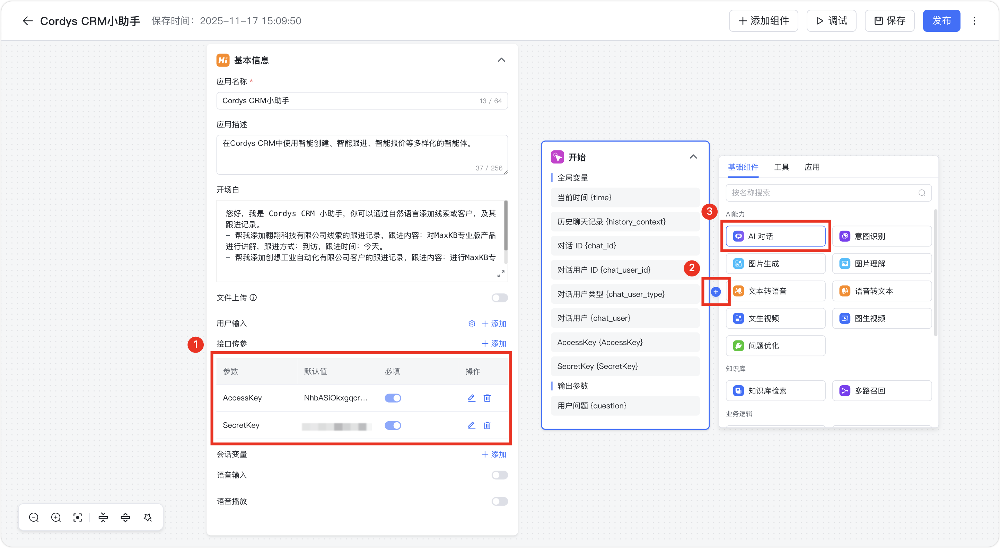
▲图7 添加“AI对话”节点在“AI对话”节点中点击“AI模型”栏目，在下拉菜单中可以选择要使用的AI模型，此处以DeepSeek为例。如果下拉菜单中没有可选模型，也可以点击“+添加模型”链接进行添加。
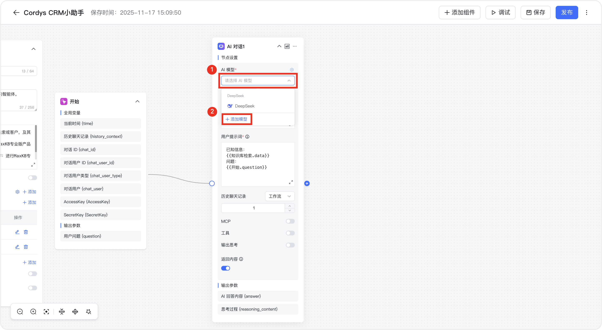
▲图8 配置AI模型由于该工作流不涉及“知识库检索”节点，因此需要在“用户提示词”一栏中删除“{{知识库检索.data}}”数据和“问题”参数，仅保留“已知信息：{{开始.question}}”作为提示词。然后，打开“MCP”选项开关，并点击开关左侧的齿轮按钮，进入MCP Server Config的设置界面。
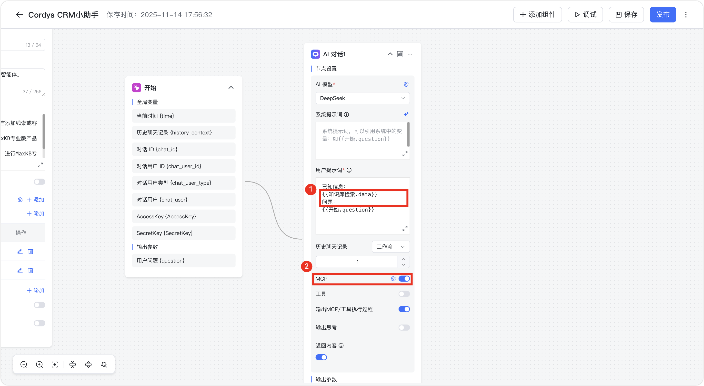
▲图9 编辑“AI对话”节点在MCP Server Config的设置界面选择“自定义”选项，并在“MCP Server Config”栏中输入配置信息，点击“保存”按钮即可。此处要填写的配置信息可以在《Cordys CRM在线文档》的“MCP服务”章节（https://cordys.cn/docs/mcp_server/）找到，具体信息如下：
{
"cordys-crm-mcp-server":{
"url":"http://<Cordys_MCP_IP>:8082/sse", // 将 IP 替换为部署机器的地址
"transport":"sse",
"headers":{
"X-Access-Key":"{{global.AccessKey}}", // 替换为 MaxKB 中 Access Key 的对应参数名
"X-Secret-Key":"{{global.SecretKey}}" // 替换为 MaxKB 中 Secret Key 的对应参数名
}
}
}
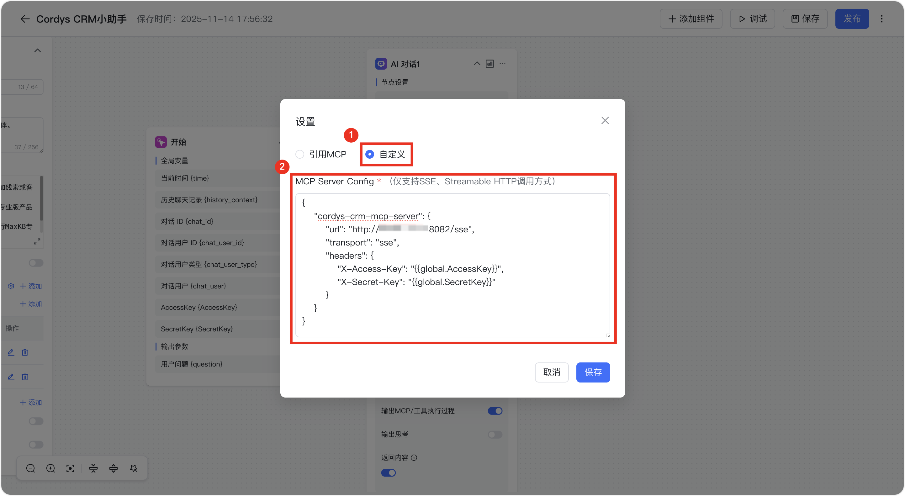
▲图10 填写MCP Server Config信息点击工作流操作界面右上角的“保存”按钮，保存编排好的工作流。保存完毕后，点击“调试”按钮，进行调试。
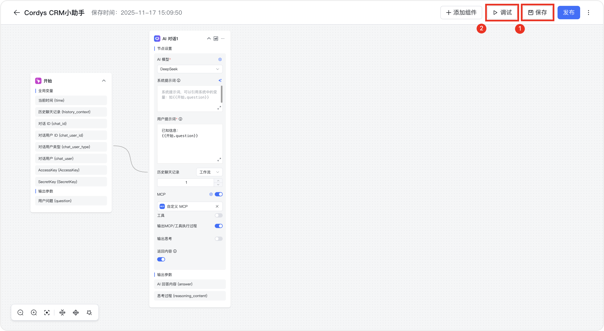
▲图11 保存并调试应用以新建一条线索为例，调试效果如下图所示。可以看到，“Cordys CRM小助手”可以正确使用Cordys CRM的MCP Server创建新线索了，表明“Cordys CRM小助手“应用已经与Cordys CRM的MCP Server成功对接。
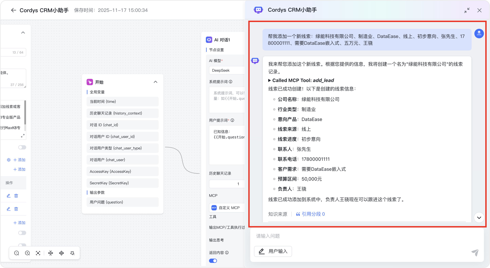
▲图12 预览“Cordys CRM小助手”的使用效果调试成功后，继续点击工作流操作界面右上角的“发布”按钮，即可发布刚刚调试好的“Cordys CRM小助手”智能体。
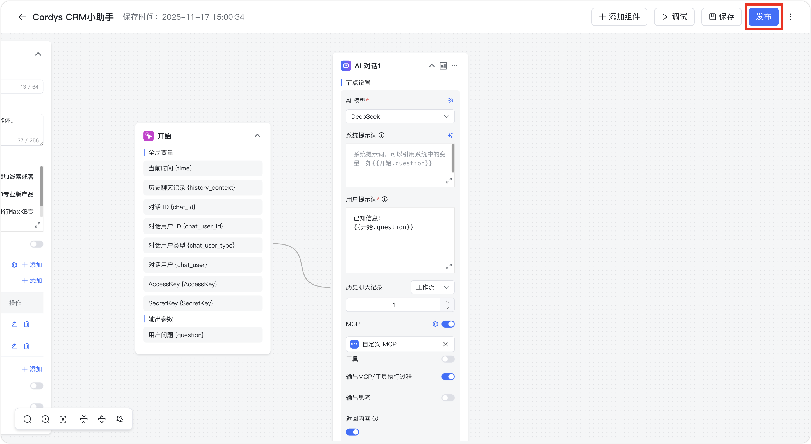
▲图13 发布“Cordys CRM小助手”应用如果要将配置好的“Cordys CRM小助手”应用嵌入至Cordys CRM中，需要提前准备好嵌入代码，该代码可以在MaxKB的应用概览页面找到。我们返回到“Cordys CRM小助手”应用的“概览”页面，点击“嵌入第三方”按钮。
▲图14 MaxKB提供智能体嵌入代码
MaxKB提供了三种嵌入模式，为了获得更佳的使用体验，推荐使用全屏模式嵌入。在“嵌入第三方”对话框中点击“全屏模式”栏目中的复制按钮，复制“全屏模式”的嵌入代码。
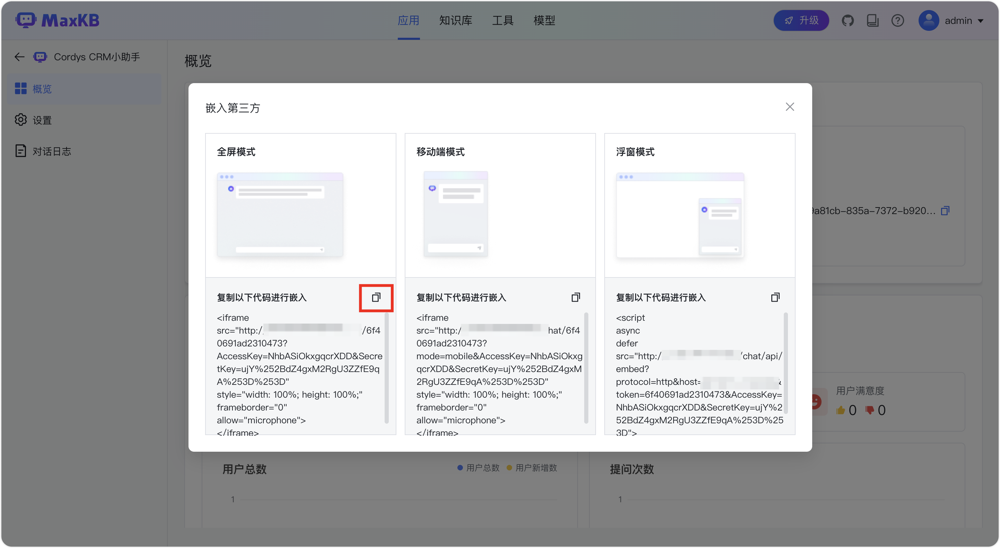
▲图15 在“嵌入第三方”对话框中复制“全屏模式”嵌入代码三、在Cordys CRM中添加智能体
接下来我们把创建好的“Cordys CRM小助手”智能体添加到Cordys CRM中。返回Cordys CRM首页，在左侧菜单栏中选择“智能体”选项，点击“添加智能体”按钮，添加我们在MaxKB中配置好的智能体。
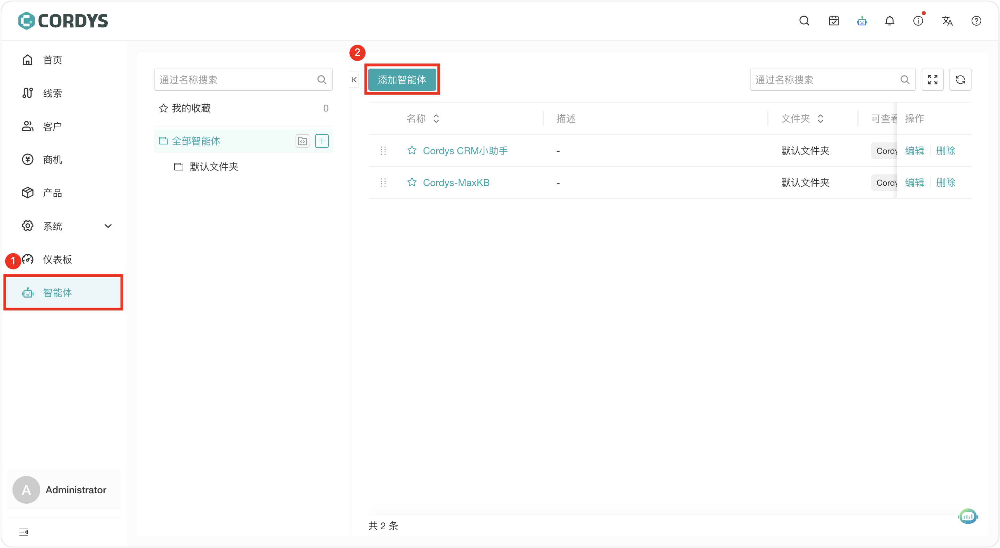
▲图16 Cordys CRM智能体配置界面在“添加智能体”对话框中，设置“智能体名称”、“文件夹”、“可查看成员”信息，然后在“嵌入脚本”栏目中粘贴刚才在MaxKB中复制的“全屏模式”嵌入代码，然后点击“添加”按钮，即可完成智能体的添加。
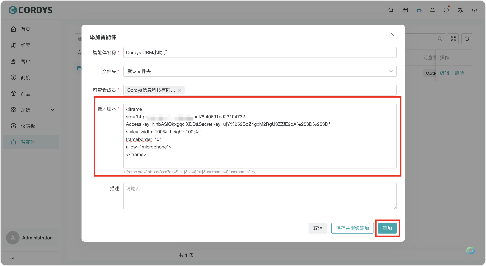
▲图17 粘贴“全屏模式”嵌入脚本四、在智能体中用自然语言进行线索智能创建
在创建好“Cordys CRM小助手”智能体并将其添加至Cordys CRM后，就可以在Cordys CRM中使用了。点击Cordys CRM右上角的机器人图标按钮，即可进入智能体的对话界面。
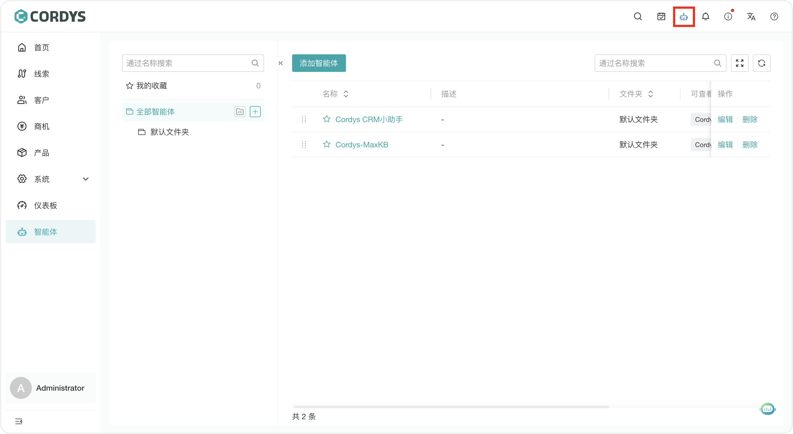
▲图18 Cordys CRM的智能体访问入口以新建销售线索为例，可以使用自然语言要求智能体自动创建销售线索。
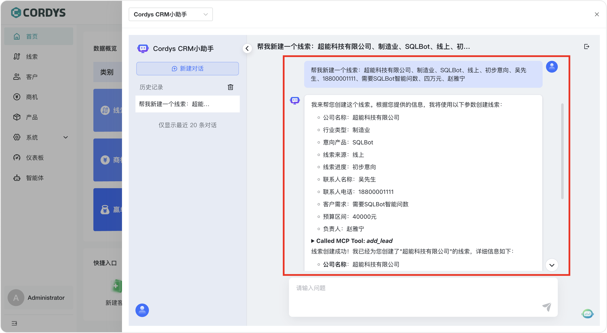
▲图19 使用智能体自动创建销售线索进入Cordys CRM的“线索”页面可以看到，刚才要求智能体新建的线索已经被自动添加至线索列表。
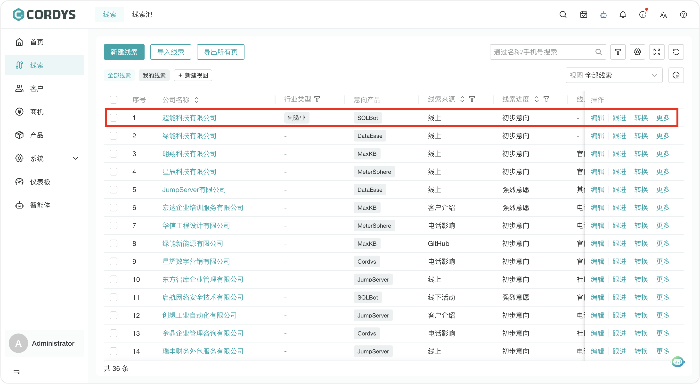
▲图20 智能体创建的线索可以在线索列表中找到五、总结
Cordys CRM对接MaxKB的智能体开发能力后，销售人员能够使用自然语言轻松完成线索智能创建、商机智能跟进和智能报价等操作。这样一来，传统CRM中相对繁琐的操作步骤就能够借助AI的能力得到大幅度的简化，任务完成的准确性也可以有效提升。如果您也想用更加智能的方式实现客户关系管理，不妨尝试一下Cordys CRM和MaxKB的产品组合，或许能够收获更加灵活高效的销售管理体验。